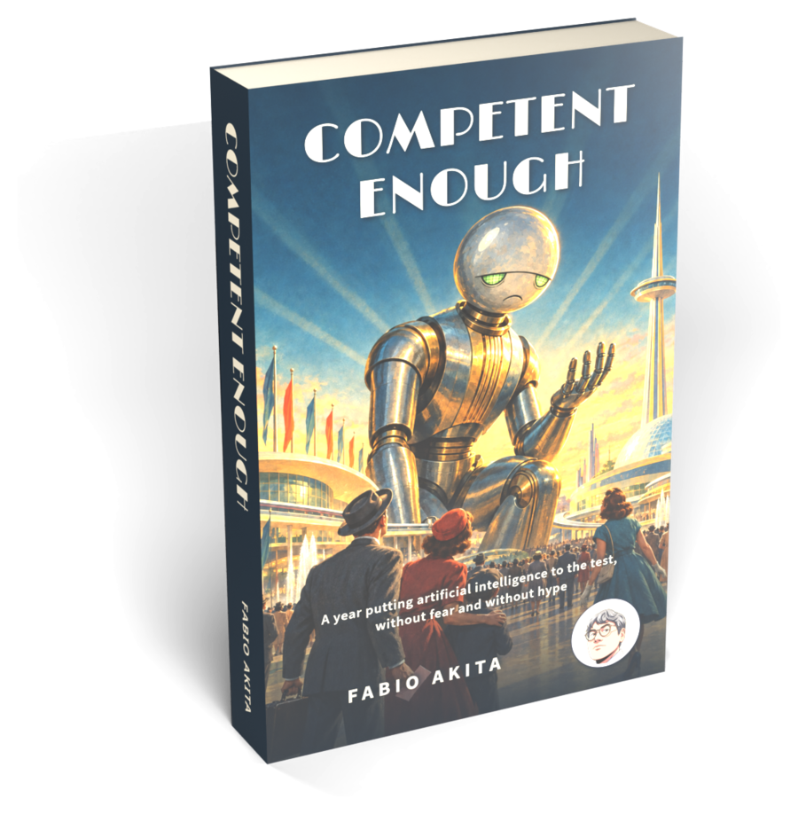

Akita's AI Lair
One programmer's year with AI, laid out like a world's fair. Walk the halls, try the machines, take the book home.
I'm Fabio Akita, a programmer for more than 30 years. I maintain more than 40 open source repositories with AI agents doing most of the typing. These are the tools I built, the workflow that ties them together, and what I learned, written down.
The fair map
Every page of the site is a pavilion. Information is at Plaza 42, in the middle, where else.
On a phone the map scrolls sideways; the same pavilions are listed in the menu.

Competent Enough
A year putting artificial intelligence to the test, without fear and without hype. Twenty-one chapters for anyone anxious or confused about AI, in English and Portuguese.
Hall of Opinions
Three essays for people who came from a headline. Each one answers a single question with sources you can check.
Why AGI doesn't matter
No agreed definition, no real test, and models that stopped getting much smarter. The tools are excellent anyway.
The limits of LLMs
PhotoCraft and the daily game ports don't mean Adobe is dead. What AI copies well, and what it can't.
AI and students
I vibe code all day because I spent decades learning the hard way. If you're starting out, don't copy me yet.
Hall of Machines
Small tools I built to keep forty repositories manageable. All open source.